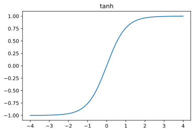
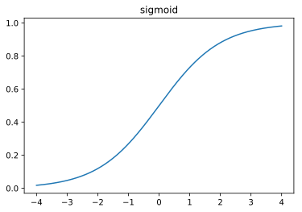
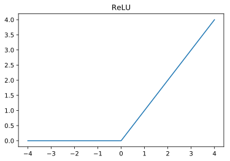

This is the fourth post of my series TensorFlow From The Ground Up.
In this post, we’ll expand on our “Adding” example Neural Network, and talk about Activation Functions and how they impact the functioning of your system.
What are activation functions?
As we saw in the previous post, Learning to Add, we can compute some real-vauled functions directly using a Neural Network style architecture.
This is useful for functions like \(f(x) = x+y\) and other linear and “linear-ish” problems.
A different, but very useful class of functions to model are simple conditionals. But, the computation graph expressed by TensorFlow has no notion of control flow statements like an if statement. So, how do we model functions that look like conditionals?
We use activation functions!
Activation functions are transformations applied to the middle layer of our neural network to modify their values in well-defined ways. For example, let’s think about writing a neural network that implements this behavior:
There’s no way to express a function like this using traditional linear equations. We need to introduce “something more” into the middle of our network. You might also notice that the output is always either \(1.0\) or \(0.0\) so maybe there’s something we can add to the output layer as well that will “clamp” values into this range.
You can think of an activation function as describing when a middle-layer node is “on” and when it’s “off”.
Let’s look at the common activation functions
There are 3 common activation functions used in Neural Networks, tanh, sigmoid, and ReLU. Their formulas and graphs of their outputs are show below:
%matplotlib inline
%config InlineBackend.figure_format = 'svg'
import numpy as np
import matplotlib.pyplot as plt
import math
x = np.linspace(-4, 4, 500)
plt.plot(x, np.tanh(x))
plt.title('tanh')
plt.show()

tanh takes any real value as input, and always produces a value in the range (-1,1). At \(x=0\), tanh has the value \(0.0\). tanh is symmetric.
def sigmoid(x): return 1. / (1. + math.exp(-x))
x = np.linspace(-4, 4, 500)
y = [sigmoid(v) for v in x]
plt.plot(x, y)
plt.title('sigmoid')
plt.show()

sigmoid takes any real value as input, and returns a value in the range (0,1). sigmoid is useful for passing to subsequent analysis (logits, softmax). sigmoid is also useful for treating nodes “like they have only binary values”. sigmoid is symmetric.
def relu(x):
if x > 0: return x
else: return 0
x = np.linspace(-4, 4, 500)
y = [relu(v) for v in x]
plt.plot(x, y)
plt.title('ReLU')
plt.show()

relu is linear for values \(x>0\) and otherwise it is zero. ReLU is not symmetric. ReLU output values are unbounded for positive vaules. ReLU is useful for piecewise linear function reconstruction.
The Computation Graph
The graph that I’m going to use in this example is exactly the same as the graph that I used for the \(f(x,y)=x+y\) example, except that I’m going to make two very small changes. I’ve duplicated and slightly simplified the code from the Learning To Add post.
import tensorflow as tf
import random
batch_size = 128
inputs = tf.placeholder(shape=(None, 2), dtype=tf.float32, name='inputs')
expected = tf.placeholder(shape=(None, 1), dtype=tf.float32, name='expected')
# Middle layer with 2 nodes
mid_layer_size = 128
input_weight = tf.Variable(
expected_shape=(2, mid_layer_size),
initial_value=tf.truncated_normal((2, mid_layer_size), mean=0, stddev=0.1))
input_bias = tf.Variable(
expected_shape=(1, mid_layer_size),
initial_value=tf.truncated_normal((1, mid_layer_size), mean=0, stddev=0.1))
# Here's where we apply the sigmoid Activation Fuction
mid_layer = tf.nn.sigmoid(tf.add(tf.matmul(inputs, input_weight), input_bias))
out_weight = tf.Variable(
expected_shape=(mid_layer_size, 1),
initial_value=tf.truncated_normal((mid_layer_size, 1), mean=0, stddev=0.1))
out_bias = tf.Variable(
expected_shape=(1, 1),
initial_value=tf.truncated_normal((1, 1), mean=0, stddev=0.1))
output = tf.nn.sigmoid(
tf.add(tf.matmul(mid_layer, out_weight), out_bias))
loss = tf.reduce_mean(tf.pow(output - expected, 2))
learning_rate = 0.001
optimizer = tf.train.GradientDescentOptimizer(learning_rate).minimize(loss)
def f(x,y):
return (x+y)%2
with tf.Session() as sess:
sess.run([tf.local_variables_initializer(),
tf.global_variables_initializer()])
print "TRAIN"
train_iterations = 150000
for i in xrange(train_iterations):
feed = { inputs: [], expected: []}
for b in xrange(batch_size):
feed[inputs].append([random.randrange(0, 10), random.randrange(0, 10),])
feed[expected].append([f(inp[0],inp[1]),])
_, l = sess.run([optimizer, loss], feed_dict=feed)
if i % 5000 == 0:
print "i =",i," loss =", l
print "VALIDATE"
validate_iterations = 25
for i in xrange(validate_iterations):
inp = [random.randrange(-100, 100), random.randrange(-100, 100),]
e = [f(inp[0], inp[1]),]
out, l = sess.run([output, loss], feed_dict={inputs:[inp,], expected:[e,]})
print "x =",inp[0], " y =",inp[1], "expected =", f(inp[0], inp[1])," out =", out, " loss =", l
TRAIN
i = 0 loss = 0.161833
i = 5000 loss = 0.00155709
i = 10000 loss = 0.00071937
i = 15000 loss = 0.000488477
i = 20000 loss = 0.000357783
i = 25000 loss = 0.000271752
i = 30000 loss = 0.000224709
i = 35000 loss = 0.000191571
i = 40000 loss = 0.000165512
i = 45000 loss = 0.000145984
i = 50000 loss = 0.000129989
i = 55000 loss = 0.000125781
i = 60000 loss = 0.000114142
i = 65000 loss = 0.000101471
i = 70000 loss = 9.21531e-05
i = 75000 loss = 8.97643e-05
i = 80000 loss = 7.96096e-05
i = 85000 loss = 7.25366e-05
i = 90000 loss = 7.49389e-05
i = 95000 loss = 7.36366e-05
i = 100000 loss = 6.67829e-05
i = 105000 loss = 6.08266e-05
i = 110000 loss = 6.21528e-05
i = 115000 loss = 5.6254e-05
i = 120000 loss = 5.23087e-05
i = 125000 loss = 5.0322e-05
i = 130000 loss = 4.55622e-05
i = 135000 loss = 4.98627e-05
i = 140000 loss = 4.49891e-05
i = 145000 loss = 4.71939e-05
VALIDATE
x = 81 y = -54 expected = 1 out = [[ 0.99591929]] loss = 1.66522e-05
x = 40 y = -75 expected = 1 out = [[ 0.98086274]] loss = 0.000366235
x = -70 y = 64 expected = 0 out = [[ 0.98118585]] loss = 0.962726
x = -94 y = -45 expected = 1 out = [[ 0.94745219]] loss = 0.00276127
x = -82 y = 19 expected = 1 out = [[ 0.94885868]] loss = 0.00261543
x = -59 y = 19 expected = 0 out = [[ 0.95760298]] loss = 0.917003
x = -25 y = 66 expected = 1 out = [[ 0.99487865]] loss = 2.62282e-05
x = 66 y = 74 expected = 0 out = [[ 0.99742305]] loss = 0.994853
x = 42 y = -26 expected = 0 out = [[ 0.99511981]] loss = 0.990263
x = -80 y = 79 expected = 1 out = [[ 0.98330623]] loss = 0.000278682
x = 95 y = 88 expected = 1 out = [[ 0.99712116]] loss = 8.28775e-06
x = 36 y = 42 expected = 0 out = [[ 0.99753702]] loss = 0.99508
x = 85 y = -13 expected = 0 out = [[ 0.99754143]] loss = 0.995089
x = 18 y = 99 expected = 1 out = [[ 0.99712735]] loss = 8.25209e-06
x = 29 y = 90 expected = 1 out = [[ 0.99730444]] loss = 7.26605e-06
x = 50 y = -57 expected = 1 out = [[ 0.989636]] loss = 0.000107412
x = -66 y = 79 expected = 1 out = [[ 0.98758823]] loss = 0.000154052
x = -2 y = -10 expected = 0 out = [[ 0.97415435]] loss = 0.948977
x = 26 y = 54 expected = 0 out = [[ 0.99758828]] loss = 0.995182
x = -66 y = 55 expected = 1 out = [[ 0.9782517]] loss = 0.000472989
x = -76 y = 1 expected = 1 out = [[ 0.94860929]] loss = 0.002641
x = 56 y = 44 expected = 0 out = [[ 0.99729091]] loss = 0.994589
x = 27 y = -33 expected = 0 out = [[ 0.98809904]] loss = 0.97634
x = -17 y = 88 expected = 1 out = [[ 0.9954223]] loss = 2.09553e-05
x = -16 y = -82 expected = 0 out = [[ 0.95281899]] loss = 0.907864
You should play with this code a little bit.
Here’s a collection of random ideas for how to play around with the code example above and gain some insights:
- Modify the “f()” function to try other linear combinations of x & y. Can it learn \(x-y\)? Can it learn \(0.5x + 0.75y - 0.33\)?
- Modify the size of the middle layer. We use 2 middle layer nodes. What if you use 200? How does that impact learning rate?
- Modify the size of the middle layer, and have it try to learn something “Hard” like \(x\cdot y\). Did it work? Do you have any thoughts about why or why not?